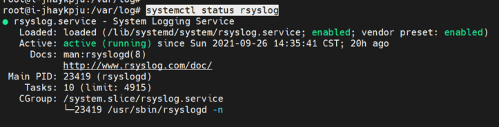
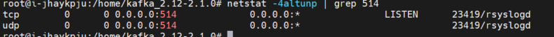
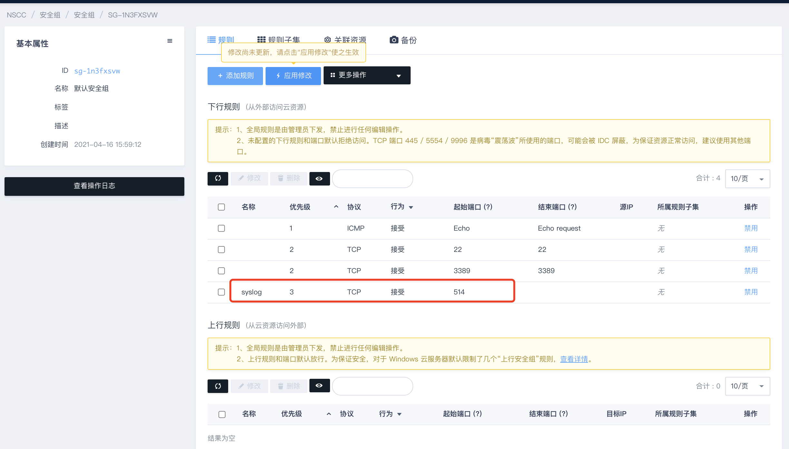
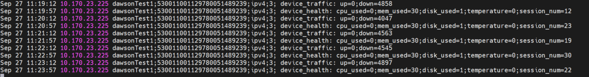

配置远端主机
本文档主要介绍 CFW-事件日志（包含访问控制日志、入侵防御日志以及流量控制日志），可通过配置远端主机/服务器来接收日志。
基本特点
在 Linux 中，默认的日志系统是 rsyslog，它是一个类 unix 计算机系统上使用的开源工具，用于在 ip 网络中转发日志信息。rsyslog 采用模块化设计，是 syslog 的替代品。rsyslog 具有如下特点：
- 实现了基本的 syslog 协议。
- 直接兼容 syslogd 的 syslog.conf 配置文件。
- 在同一台机器上支持多个 rsyslogd 进程。
- 丰富的过滤功能，可将消息过滤后再转发。
- 灵活的配置选项，配置文件中可以写简单的逻辑判断。
- 增加了重要的功能，如使用 tcp 进行消息传输。
- 有现成的前端 Web 展示程序。
- 默认安装的 ryslog 软件包提供的守护进程是 rsyslog，它是一项系统的基础服务。应该设置为开机运行，由 systemd 启动的。
操作步骤
创建syslog接受主机/服务器
同zone内准备rsyslog主机/服务器，记录主机/服务器基础网络。
检查rsyslog状态
-
输入
systemctl status rsyslog命令。
-
通常情况下rsyslog为开机运行，如果上述查看状态未启动，输入命令：
systemctl enable rsyslogsystemctl start rsyslog -
设置开机运行。
配置 rsyslog
为了方便日志监控并防止日志被篡改、通常在工作网络中会架设中央日志主机/服务器用于存放各个主机/服务器的日志。rsyslog 我支持日志的远程发送和接受。
rsyslog 的配置文件 /etc/rsyslog.conf，修改配置文件，搭建 rsyslog 远程日志主机/服务器。
以下为 rsyslgo 主机/服务器使用到的模块与配置语法：
| 功能 | RPM包名 | 模块 | 配置语法 |
|---|---|---|---|
| 使用udp协议接收 | rsyslog | imudp | $ModLoad imudp $InputUDPServerRun 514 |
| 使用tcp协议接收 | rsyslog | imtcp | $ModLoad imtcp $InputTCPServerRun 514 |
举例
vim /etc/rsyslog.conf去掉下面4行前面的#号注释符. (开启tcp和udp接受，监听端口可以自定义)， 日志文件路径可以自定义
module(load="imudp")
input(type="imudp" port="514")
module(load="imtcp")
input(type="imtcp" port="514")
#定义模板，接受日志文件路径，区分了不同主机的日志
$template IpTemplate,"/var/log/%HOSTNAME%/%FROMHOST-IP%.log"
*.* ?IpTemplate
-
保存退出
-
使用以下命令检查Rsyslog配置是否存在语法错误：
rsyslogd -f /etc/rsyslog.conf -N1vim /etc/default/rsyslog (-r 允许接受外来日志消息. -x 禁用掉dns记录项不够齐全或其他的日志中心的日志)
RSYSLOGD_OPTIONS=”-c5 -r -x”
重启rsyslog
输入 systemctl restart rsyslog 重启rsyslog。
检查rsyslog运行
输入 systemctl status rsyslog
输入 netstat -4altunp | grep 514

rsyslog主机/服务器安全组设置
将配置 rsyslog 的监听端口，在安全组中放行
查看rsyslog日志
进入配置rsyslog配置的接受日志文件路径，查看日志产生
